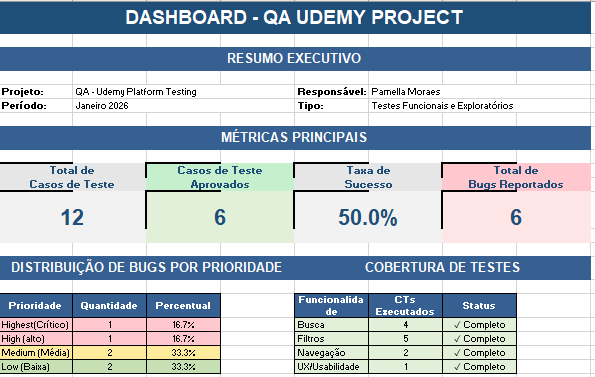

Projeto de QA Manual | Testes Funcionais & Exploratórios

Abaixo destaco as falhas mais importantes encontradas durante os testes, que afetam a experiência do usuário na pesquisa de cursos.
Testei a plataforma como um usuário real, explorando menus e inserindo dados inválidos para ver como o sistema reagia aos erros.
Documentei os erros encontrados com passo-a-passo claro e evidências visuais (prints e vídeos) para facilitar a correção pelos desenvolvedores.
Usei a ferramenta de inspeção do navegador (aba Network) para identificar se os erros visuais vinham de links quebrados ou falhas na requisição.
Criação de Casos de Teste estruturados e elaboração de relatórios resumindo os resultados da execução.